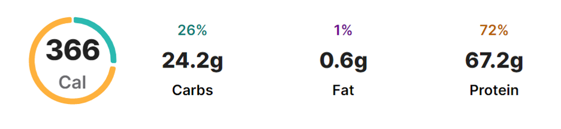

Raw Marinated Crab


Rating : 4.8 Duration: 2 hours
Serving size : 400 g
Recipe:
Ingredients:
- 2 blue crabs live
- 1 Tablespoons gochugaru korean pepper flakes, based on spice level
- 2 tablespoons soy sauce
- 0.5 Tablespoon corn syrup
- honey or sugar
- 1 tablespoons rice vinegar
- ½ tablespoon sesame oil
- 1 garlic cloves minced or grated
- ¼ teaspoon ginger minced or grated
- pinch pepper
- 0.5 green onions sliced
- ½ tablespoon sesame seeds
Directions:
- Place the crabs in the freezer for about 2 hours to put them to “sleep” so it’s easier to work with
- Meanwhile, mix the seasoning in a bowl or in the container you’ll store the crabs.
- Rinse the crabs well. Remove the flap (female apron) by twisting it off. Cut off the ends of the legs as they don’t contain any meat but keep the claws.
- Using your thumb, break apart the shell and remove any black film inside the shell. Wash inside the surface, being careful not to wash/remove any eggs (roe). If there are any eggs, you can set aside to add to the seasoning. (You can discard the shell or I usually marinate the shells with seasoning to use as a rice bowl)
- Remove any black film or gills along the sides of the crab. Using kitchen scissors, cut off the mouth area and any sharp edges you may see so it’s easier and safer to eat.
- Rinse the crabs in water, being careful not to remove any eggs from the crab or you can transfer the eggs to a container with the seasonings.
- Cut the crabs in half or quarters and transfer to a container. Mix with the seasoning until the crabs are fully coated. Cover and place in the fridge to marinate for 6-24 hours.
- Enjoy with a bowl of rice. The crabs should be eaten within a few days.